Penjelasan Manufacturing Order
Informasi pada Manufacturing Order dibagi menjadi beberapa area, diantaranya:
- Header
- Tab Consumend Product
- Tab Finished Product
- Tab Scheduled Product
- Tab Extra Information
- Tab Workflow Policy
- Tab Notes
- Tab Byproduct
- Tab Applied Cost
HEADER
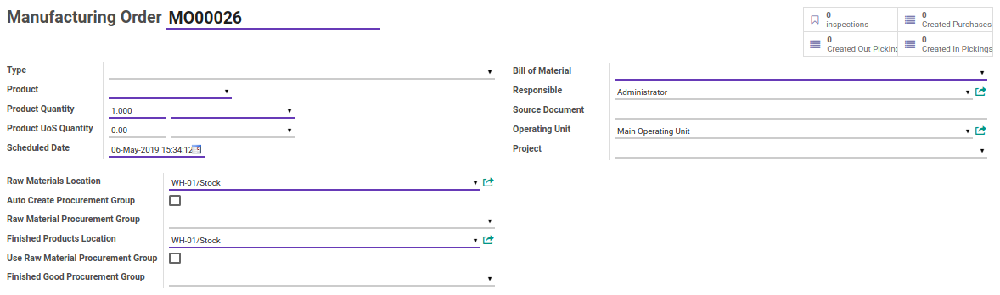
Smart Button
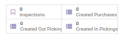
Tombol-tombol yang berfungsi sebagai Shortcut untuk masuk ke dalam menu yang berkaitan dan juga sebagai pemberi informasi mengenai seberapa banyak data, total, dll
# Manufacturing Order
Nomor Manufacturing Order.
Type
Mendefinisikan tipe dari Manufacturing Order.
Product
Mendefinisikan produk jadi yang dihasilkan dari proses Manufacturing Order.
Product Quantity
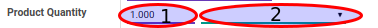
- 1.Quantity: Mendefinisikan jumlah produk jadi yang dihasilkan dari proses Manufacturing Order.
- 2.UoM: Mendefinisikan satuan produk jadi yang dihasilkan dari proses Manufacturing Order.
Product UoS Quantity
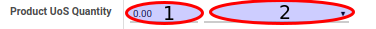
- 1.Quantity: Mendefinisikan jumlah produk jadi yang dihasilkan dari proses Manufacturing Order.
- 2.UoS: Mendefinisikan satuan produk jadi yang dihasilkan dari proses Manufacturing Order.
Scheduled Date
Menjadwalkan tanggal proses Manufacturing Order.
Bill of Material
Mendefinisikan Bill of Material.
Responsible
Mendefinisikan user yang bertanggung jawab terkait proses Manufacturing Order.
Source Document
Mendefinisikan dokumen terkait proses Manufacturing Order.
Operating Units
Catatan: Isian ini hanya untuk user yang memiliki group Multi Operating Unit
Mendefinisikan operating unit terkait proses Manufacturing Order.
Project
Mendefinisikan projek terkait proses Manufacturing Order.
Raw Materials Location
Mendefinisikan lokasi bahan baku yang akan digunakan
Auto Create Procurement Group
#TODO
Raw Material Procurement Group
#TODO
Finished Products Location
Mendefinisikan lokasi barang jadi yang akan digunakan
Use Raw Material Procurement Group
#TODO
Finished Good Procurement Group
#TODO
TAB CONSUMED PRODUCT
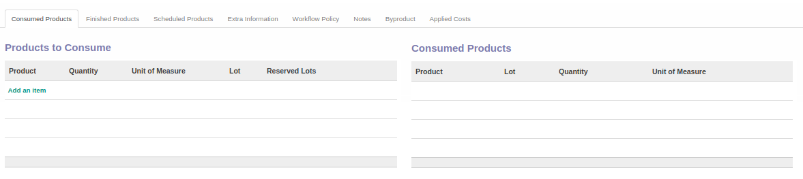
Products to Consume
Mendefinisikan produk(bahan baku) "yang akan digunakan" untuk proses membuat produk(barang jadi). Isian ini dapat diisi otomatis oleh Odoo berdasarkan Bill of Material yang dipilih atau menambahkannya secara manual dengan mengklik tombol Add an item
Consumed Products
Mendefinisikan produk(bahan baku) "yang sudah digunakan" untuk proses membuat produk(barang jadi).
TAB FINISHED PRODUCT
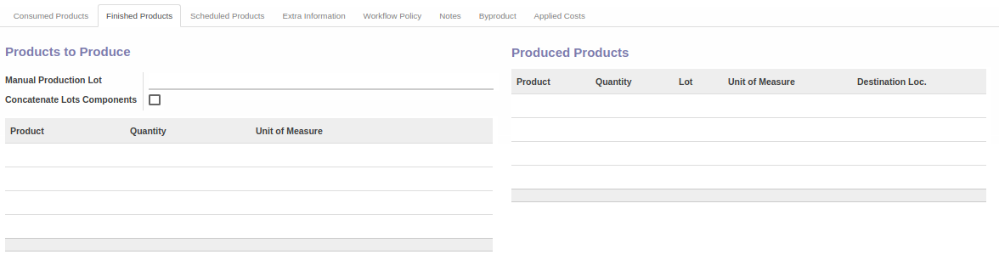
Manual Production Lot
#TODO
Concatenate Lots Components
#TODO
Products to Produce
Mendefinisikan produk(barang jadi) "yang akan diproduksi".
Produced Products
Mendefinisikan produk(barang jadi) "yang sudah diproduksi".
TAB SCHEDULED PRODUCT
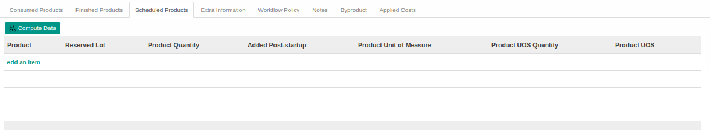 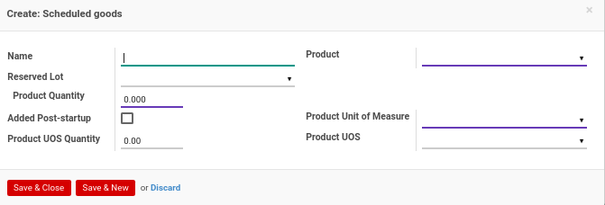
Name
Mendefinisikan nama Scheduled Goods
Product
Mendefinisikan produk Scheduled Goods
Reserved Lot
#TODO
Product Quantity
Mendefinisikan kuantitas produk Scheduled Goods
Added Post-startup
#TODO
Product Unit Of Measure
Mendefinisikan satuan produk Scheduled Goods
Product UoS Quantity
Mendefinisikan kuantitas produk UoS Scheduled Goods
Product UoS
Mendefinisikan produk UoS Scheduled Goods
TAB EXTRA INFORMATION
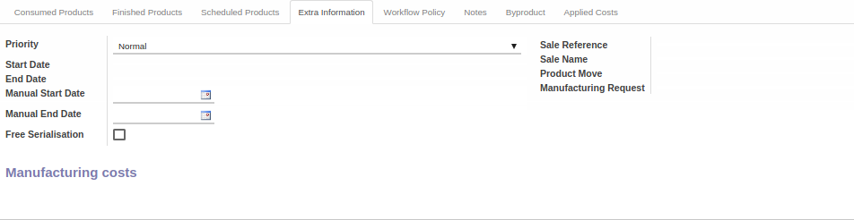
Priority
Mendefinisikan prioritas terkait proses Manufacturing Order
Start Date
Diisi otomatis oleh odoo. Mendefinisikan tanggal dimulainya proses Manufacturing Order
End Date
Diisi otomatis oleh odoo. Mendefinisikan tanggal berakhirnya proses Manufacturing Order
Manual Start Date
Mendefinisikan secara manual tanggal dimulainya proses Manufacturing Order
Manual End Date
Mendefinisikan secara manual tanggal berakhirnya proses Manufacturing Order
Free Serialisation
#TODO
Sale Reference
Mendefinisikan referensi penjualan
Sale Name
Mendefinisikan nama penjualan
Product Move
Mendefinisikan pergerakan stock/produk
Manufacturing Request
Mendefinisikan permintaan produksi
TAB WORKFLOW POLICY
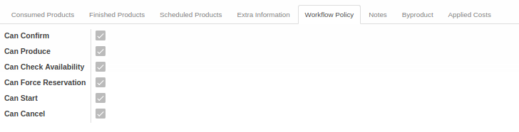
Can Confirm
Diisi otomatis oleh Odoo. Jika aktif, maka user yang membuka data Manufacturing Order dapat melakukan Konfirmasi Manufacturing Order.
Can Produce
Diisi otomatis oleh Odoo. Jika aktif, maka user yang membuka data Manufacturing Order dapat melakukan Produksi Finished Goods.
Can Check Availability
Diisi otomatis oleh Odoo. Jika aktif, maka user yang membuka data Manufacturing Order dapat melakukan Cek Ketersediaan Raw Material.
Can Force Reservation
Diisi otomatis oleh Odoo. Jika aktif, maka user yang membuka data Manufacturing Order dapat melakukan Force Reservation
Can Start
Diisi otomatis oleh Odoo. Jika aktif, maka user yang membuka data Manufacturing Order dapat melakukan Memulai Manufacturing Order.
Can Cancel
Diisi otomatis oleh Odoo. Jika aktif, maka user yang membuka data Manufacturing Order dapat melakukan Membatalkan Manufacturing Order.
TAB NOTES
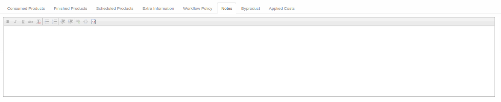
Notes
Catatan/Informasi tambahan terkait Manufacturing Order
TAB BYPRODUCT
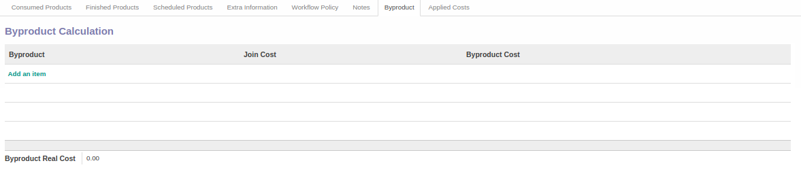 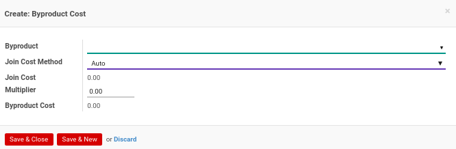
Byproduct
#TODO
Join Cost Method
#TODO
Join Cost
#TODO
Multiplier
#TODO
Byproduct Cost
#TODO
TAB APPLIED COST
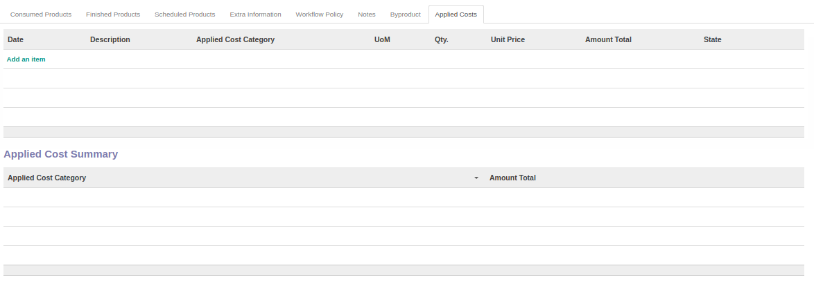 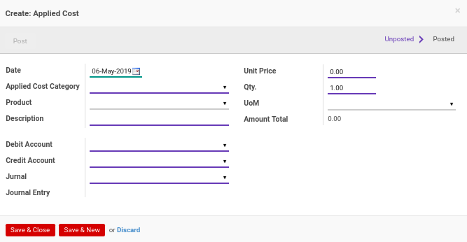
Date
Mendefinisikan tanggal Applied Cost
Applied Cost Category
Mendefinisikan kategori Applied Cost
Product
Mendefinisikan produk Applied Cost
Description
Mendefinisikan deskripsi Applied Cost
Unit Price
Mendefinisikan harga satuan Applied Cost
Qty.
Mendefinisikan kuantitas Applied Cost
UoM
Mendefinisikan satuan Applied Cost
UoM
Menginformasikan total Applied Cost
Debit Account
Mendefinisikan akun debet
Debit Account
Mendefinisikan akun kredit
Jurnal
Mendefinisikan jurnal yang digunakan
Joernal Entry
Mendefinisikan entri jurnal